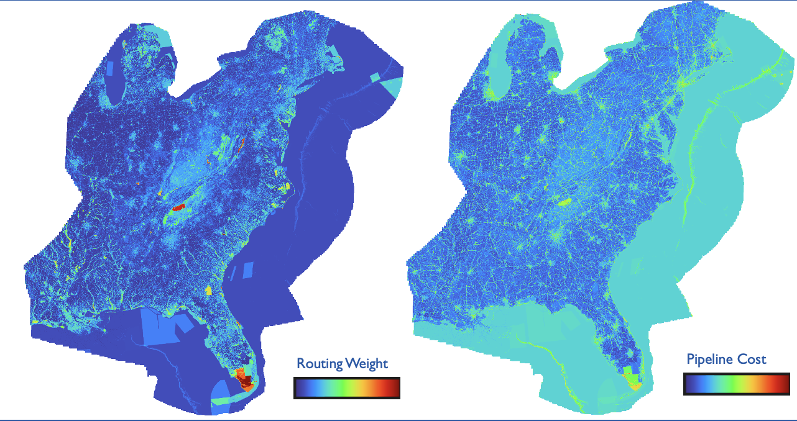

Geospatial Data Scientist | Climate & Energy | Hydrology
Methane Detection Platform:
CostMAPPRO: Pipeline Routing for CO2 Transport: 
Machine Learning for Frost Prediction:
Analyzing Watershed Behavior in a Changing Climate:
k-Shortest Paths for Pipeline Routing:
Changing Hydrology of the Pajarito Plateau under Climate Change: